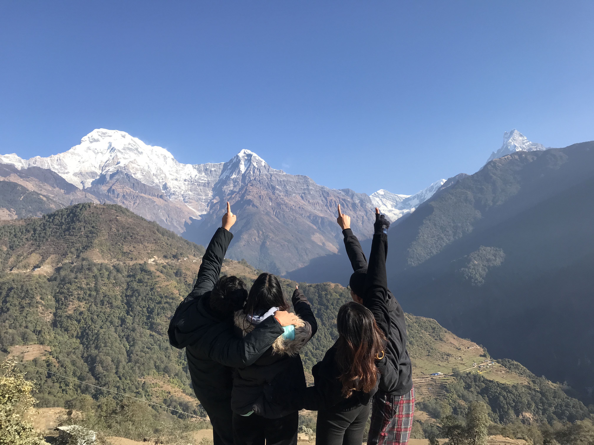

Ghandruk is a Village Development Committee in the Kaski District of the
Gandaki Province of Nepal. Situated at a distance of 32 km north-west to Pokhara, the
village is readily accessible by public buses and private taxis from the provincial
headquarter. At the time of the 1991 Nepal census, it had a population of 4,748 residing in
1,013 individual households. Ghandruk is a common place
for treks in the Annapurna range of Nepal (Annapurna Base camp and Annapurna
Circuit treks, in particular).


Ghandruk, being only 4-5 hours drive from Pokhara, makes the place a great weekend break
amidst the mountains. One could also start the Annapurna trek from the Annapurna region in
Ghandruk. Some of the other popular trekking trails include
Mardi Himal Base camp, Landruk, Tadapani and Kimche. There is also a
traditional Gurung museum that you can visit and a marketplace called Seuli Bazar where you
can buy local goods and groceries.